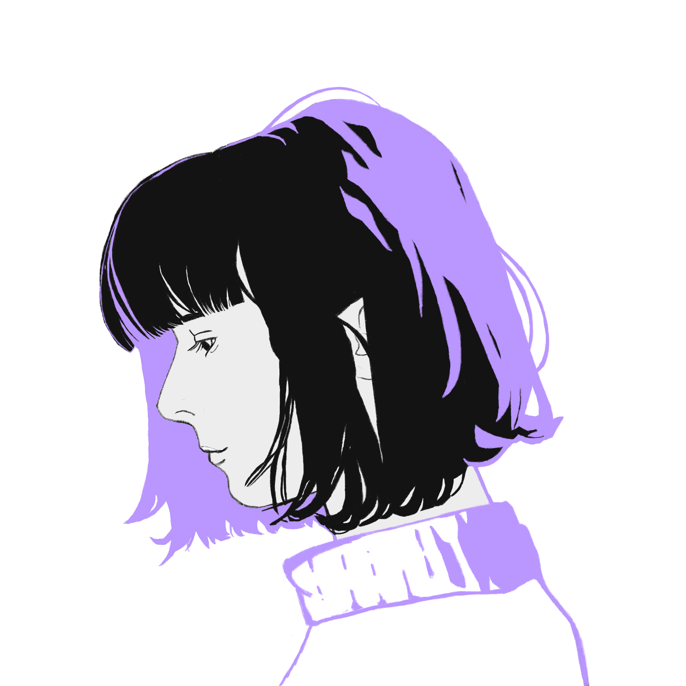

UX/UI Designer
PROFILE
I combine UX/UI design, languages, and marketing to craft accessible and inclusive experiences.
Empathy and clear communication are the compass of my professional journey.
SOFT SKILLS
- Empathy
- Clear and inclusive communication
- Creativity
- Problem-solving
- Attention to detail
- Teamwork
LANGUAGES
- Italian - Native
- English - Advanced
- Japanese - Advanced
- French - Intermediate
TECHNICAL SKILLS
- Design tools: Figma, FigJam, Miro, Photoshop, Illustrator, Affinity Design
- Marketing: SEO, Google Analytics, Canva
- Office: Word, Excel, PowerPoint
- Suite: Office, G-Suite
- AI: N8N, Generative AI, Prompt engineering
EDUCATION AND TRAINING
10/2022 - 08/2026 | start2impact
- UX Design: discovery, accessibility, user research,surveys, user testing
- UI Design: Brand identity, Design system, Figma, wireframe, user interface, prototype
- Practical projects
03/2025 - 04/2025 | Jobros
- Marketing mix, SWOT, brief, user research, social media strategy
- Personal project: Marketing plan for the Future Forwardevent
2019 | University Ca’Foscari Venice
- Japanese language
- Business economics, international relations, law
- Erasmus+ at Université Paris Diderot
EXPERIENCE
12/2023 - 05/2024 | Nonsolocaffè (TV)
Managing customer needs under pressure, with effective communication towards an Italian and international audience.
06/2022 - 10/2022 | Ottica Chiaradia
Managed the full customer journey, from purchase through after-sales support, collecting personal and optometric data in FOCUS 10.
01/2021 - 10/2022 | Villa Bolasco (UNIPD)
Translation of historical commercial documents from Japanese; presentation of results at a press conference.
05/2021 - 05/2022 | Biblioteca di Resana
Front- and back-office management, editorial care of the library’s Manga collection, and production of social media content and graphic materials. Design, planning and promotion of themed events.
05/2021 - 05/2022 | Associazione San Francesco
Online and offline registration management, event facilitation and support for users of widely varying ages.